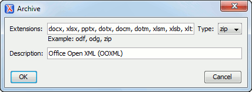

Archive Preferences
To configure Archive options, open the Preferences dialog box and go to Archive.
The following options are available in the Archive preferences page:
- Archive backup options
- Controls if the application makes backup copies of the modified archives. The
following options are available:
- Always create backup copies of modified archives - When you modify an archive, its content is backed up.
- Never create backup copies of modified archives - No backup copy is created.
- Ask for each archive once per session - Once per
application session for each modified archive, user confirmation is required to
create the backup. This is the default setting.Note: Backup files have the name originalArchiveFileName.bak and are located in the same folder as the original archive.
- Archive types
-
This table contains all known archive extensions mapped to known archive formats. Each row maps a list of extensions to an archive type supported in Oxygen XML Editor. You can use the Edit button at the bottom of the table to edit an existing mapping or the New button to create a new one and associate your own list of extensions to an archive format.
Figure 1. Edit Archive Extension Mappings Important: You have to restart Oxygen XML Editor after removing an extension from the table for that extension to not be recognized as an archive extension. - Store Unicode file names in Zip archives
- Use this option when you archive files that contain international (non-English) characters in file names or file comments. If this option is selected and an archive is modified in any way, UTF-8 characters are used in the names of all files in the archive.